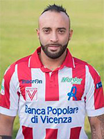
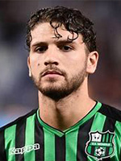

Il TorreArchimede Stadium rappresenta un esempio di modernità e avanguardia architettonica non lontano dal
centro di Padova. Dal ospita le gare casalinghe della squadra A.C. Torre Archimede, e con una capacità
di 60.000 spettatori è in grado di ospitare i maggiori eventi della città.
... Leggi la storia completa
I nuovi acquisti
É con onore che possiamo annunciare questa stagione l'acquisto di alcuni nuovi e promettenti talenti per iniziare al meglio questo campionato. Avrete modo di conoscerli meglio in campo e per vedere di che pasta sono fatti i nostri giovani!
Gilberto
Filè

Stefano
Giacomelli
Alvaro
Morata

Manuel
Locatelli
Se sei curioso di conoscere meglio in nostro team, scopri la rosa completa